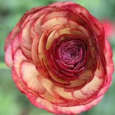
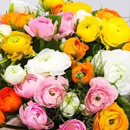
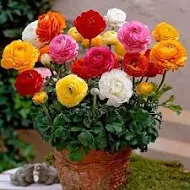

ranunculus

Picotee Caffe Ranunculus Bouquet
range: ₹ 890.
Product Details:
- Ranunculus or Persian Buttercups are a favorite of florists with their beautiful rose-like blossoms that are packed with jewel-colored petals.
-
- Picotee Caffe is a wonderful mix of gold, terracotta, and bronze.
- This flower blooms in late spring to early summer and attracts pollinators.
- Hardiness zones 8-10.
- There are 25 corms in your order.
- Additional Information
- Product Description

plantogallery Ranunculus Bouquet
range:₹ 556
Product Details:
- seedtype: flower
- covered with red ribbon

Flower bulb - Ranunculus (Buttercup Plant) bouquet
range:₹ 899
Product Details:
Product Details:
- Seed Type: Flower
- Suitable For: Indoor, Outdoor
- Organic Plant Seed